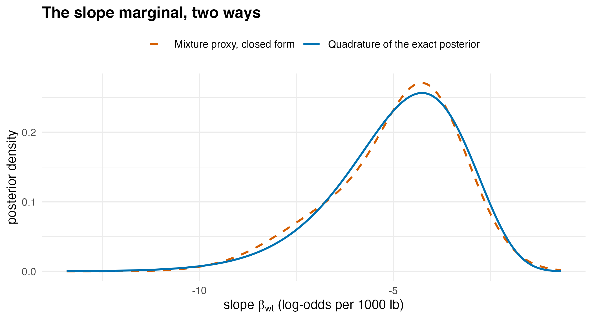
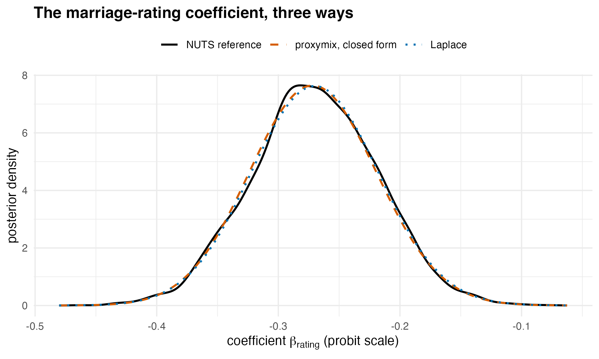

Compressing a Bayesian posterior you can evaluate but not sample
Source:vignettes/articles/extended/posterior_proxy.Rmd
posterior_proxy.Rmd
has_ggplot2 <- requireNamespace("ggplot2", quietly = TRUE)The problem
A modeller has written down a likelihood and a prior, can evaluate their product at any parameter value, and does not want to spend the afternoon tuning a sampler to get four numbers out of it. The question is: I have an unnormalised log-posterior I can evaluate and no appetite for tuning a sampler – can I get the marginal, the tail probability, the evidence and an error bar out of it?
The workflow below takes an unnormalised log-posterior and returns a compact object that can be marginalised, conditioned, integrated and given error bars, with no Markov chain in between.
Package capabilities
gmm_target() wraps a log-density into the object the
fitting verbs consume. Declaring normalised = FALSE records
that the normalising constant is unknown, which is what an unnormalised
posterior is.
fit_proxymix() with regime = "kld" runs the
importance-sampled KLD-EM of van der Hoek and Elliott (2024) against
that target. Its proposal argument takes the importance
proposal, and adapt = "pmc" refreshes that proposal from
the current fit as the run proceeds, by population Monte Carlo (Cappé et
al., 2008). Each refreshed proposal keeps a share of its mass on the
initial one as a defensive component (Owen and Zhou, 2000), so the
initial proposal only has to be survivable rather than good.
proposal_mvt() builds a multivariate Student-t proposal,
whose heavy tails are the robust default.
gmm_fit_quality() returns the certificate that travels
with the fit: the effective sample size of the importance weights, a
degeneracy flag, the support fraction, and a held-out validation gap. It
is the part to read before anything else.
gmm_evidence() estimates the log marginal likelihood,
using the fitted proxy as its own importance proposal.
gmm_marginalise(), pgmm() and
qgmm() read marginals, tail probabilities and quantiles off
the fitted mixture in closed form, with no further target
evaluations.
gmm_fit_ensemble() and
proxy_functional_ci() price the fit’s own sampling
variability: the ensemble re-weights the fit’s cached importance draws
with Bayesian-bootstrap weights (Rubin, 1981), so a bootstrap interval
on any functional of the mixture costs no new posterior evaluations at
all.
Addressing the problem
A real unnormalised posterior
A Bayesian logistic regression of transmission type on weight for the
built-in mtcars data, under a flat prior. The log-posterior
is the log-likelihood, known only up to its normalising constant, the
integral of the likelihood over the two coefficients. A flat prior is
improper, so this constant depends on the arbitrary scale given to the
prior, and it cannot be used as a model evidence to compare models.
set.seed(20260705)
y <- mtcars$am
w <- mtcars$wt
log_post <- function(theta) {
if (is.null(dim(theta))) theta <- matrix(theta, ncol = 2L)
eta <- outer(rep(1, length(y)), theta[, 1L]) + outer(w, theta[, 2L])
colSums(y * eta - log1p(exp(eta)))
}
tgt <- gmm_target(
n_dim = 2L,
log_density = log_post,
normalised = FALSE,
name = "logistic(am ~ wt)"
)Fit the proxy
A cheap point fit locates the proposal. This is the usual workflow:
any rough guess of location and scale will do, because with
adapt = "pmc" the proposal is refreshed from the fit
itself.
Population Monte Carlo re-estimates the fitting objective on a fresh importance sample at each refresh. In this run the objective rises between refreshes and falls at some of them, and the monotonicity check reports the largest fall as a notice. The handler below prints the notice’s first line; its second line, a hint about ridge regularisation, is written for runs without refreshes.
mle <- stats::glm(am ~ wt, data = mtcars, family = stats::binomial())
q0 <- proposal_mvt(2L, mean = stats::coef(mle),
sigma = 9 * stats::vcov(mle), df = 5)
fit_notes <- character(0)
fit <- withCallingHandlers(
fit_proxymix(tgt, N = 2L, regime = "kld", proposal = q0,
is_size = 3000L, max_iter = 60L, seed = 1L,
adapt = "pmc"),
proxymix_nonmonotone = function(cond) {
fit_notes <<- c(fit_notes, conditionMessage(cond))
invokeRestart("muffleWarning")
}
)
cert <- gmm_fit_quality(fit)
n_refresh <- fit@diagnostics$n_refresh
cat(sub("\n.*", "", fit_notes), sep = "\n")
#> The importance-weighted EM objective decreased by 0.0716 during fitting.| Certificate entry | Value |
|---|---|
| regime | kld |
| converged | TRUE |
| degenerate | FALSE |
| effective sample size | 2427.3 |
| effective sample size, relative | 0.809 |
| smallest per-component effective size | 1728.4 |
| largest weight | 0.000538 |
| support fraction | 1 |
| importance-sampled divergence, in-sample | -7.823 |
| held-out validation gap | 0.00344 |
The evidence, with an independent check
The fitted proxy doubles as the importance proposal for the
normalising constant, which gmm_evidence() reports as the
log evidence. A Laplace approximation (Tierney and Kadane, 1986)
computed directly from the maximum-likelihood fit gives an independent
first-order check that shares none of the importance machinery.
ev <- gmm_evidence(fit, n = 4000L, seed = 2L)
## Laplace approximation: log f(theta_hat) + (d/2) log(2 pi)
## - (1/2) log det(-Hessian).
H <- -solve(stats::vcov(mle))
log_z_laplace <- log_post(matrix(stats::coef(mle), nrow = 1L)) +
log(2 * pi) -
0.5 * as.numeric(determinant(-H, logarithm = TRUE)$modulus)
evidence_gap <- abs(ev$log_z - log_z_laplace)
c(importance = round(ev$log_z, 3), se = signif(ev$se_log_z, 3),
laplace = round(log_z_laplace, 3), gap = round(evidence_gap, 3))
#> importance se laplace gap
#> -7.8360 0.0024 -7.9270 0.0910Closed-form reads off the proxy
Everything below is exact algebra on the fitted mixture: no chains, no further target evaluations. The marginal posterior of the slope, the probability that the slope is negative, and a central 90 per cent interval.
slope <- gmm_marginalise(fit, keep = 2L)
p_negative <- pgmm(0, slope)
p_positive <- pgmm(0, slope, lower.tail = FALSE)
interval <- qgmm(c(0.05, 0.95), slope)
c(p_slope_negative = round(p_negative, 5),
p_slope_positive = signif(p_positive, 2),
lower = round(interval[1L], 3), upper = round(interval[2L], 3))
#> p_slope_negative p_slope_positive lower upper
#> 0.999920 0.000083 -8.073000 -2.534000An independent reference for the marginal
The reads above are all functions of the fitted mixture, so on their own they cannot say whether the mixture is right. In two dimensions the exact posterior can be integrated on a grid instead, which uses the log-posterior directly and never touches the fit. Exponentiating against the grid maximum keeps the sum numerically stable. A rectangle (Riemann) sum over the grid gives the log evidence, and summing over the intercept axis leaves the slope marginal, which the same rectangle sum then normalises. The intercept and the slope are strongly correlated, so the grid has to reach far along the ridge; a much wider, coarser grid measures the share of the posterior mass that the working grid leaves out.
a_grid <- seq(-2, 70, length.out = 600L) # intercept
b_grid <- seq(-21, 0, length.out = 400L) # slope
quad <- as.matrix(expand.grid(a = a_grid, b = b_grid))
log_dens <- log_post(quad)
dens <- matrix(exp(log_dens - max(log_dens)), nrow = length(a_grid))
da <- a_grid[2L] - a_grid[1L]
db <- b_grid[2L] - b_grid[1L]
log_z_grid <- log(sum(dens) * da * db) + max(log_dens)
# the same posterior on a much wider, coarser grid, one slope at a time
a_wide <- seq(-20, 150, length.out = 700L)
b_wide <- seq(-50, 10, length.out = 700L)
log_wide <- vapply(b_wide, function(b) log_post(cbind(a_wide, b)),
numeric(length(a_wide)))
dens_wide <- exp(log_wide - max(log_wide))
in_grid <- outer(a_wide >= min(a_grid) & a_wide <= max(a_grid),
b_wide >= min(b_grid) & b_wide <= max(b_grid))
mass_outside <- sum(dens_wide[!in_grid]) / sum(dens_wide)
marg_quad <- colSums(dens) * da
marg_quad <- marg_quad / (sum(marg_quad) * db)
marg_proxy <- dgmm(matrix(b_grid, ncol = 1L), slope)
curve_gap <- max(abs(marg_quad - marg_proxy))
c(mass_outside = signif(mass_outside, 2))
#> mass_outside
#> 1.5e-07
c(log_z = round(log_z_grid, 3), peak_density = signif(max(marg_quad), 3))
#> log_z peak_density
#> -7.834 0.257
c(max_curve_gap = signif(curve_gap, 3),
gap_pct_of_peak = round(100 * curve_gap / max(marg_quad), 1))
#> max_curve_gap gap_pct_of_peak
#> 0.0158 6.2000
# plotted where the quadrature density is above a thousandth of its peak
shown <- marg_quad > 1e-3 * max(marg_quad)
marg_df <- rbind(
data.frame(slope = b_grid[shown], density = marg_quad[shown],
source = "Quadrature of the exact posterior"),
data.frame(slope = b_grid[shown], density = marg_proxy[shown],
source = "Mixture proxy, closed form")
)
ggplot2::ggplot(marg_df,
ggplot2::aes(slope, density, colour = source,
linetype = source)) +
ggplot2::geom_line(linewidth = 0.8) +
ggplot2::scale_colour_manual(
name = NULL,
values = c("Quadrature of the exact posterior" = "#0072B2",
"Mixture proxy, closed form" = "#D55E00")
) +
ggplot2::scale_linetype_manual(
name = NULL,
values = c("Quadrature of the exact posterior" = "solid",
"Mixture proxy, closed form" = "dashed")
) +
ggplot2::labs(
title = "The slope marginal, two ways",
x = expression(paste("slope ", beta[wt], " (log-odds per 1000 lb)")),
y = "posterior density"
) +
ggplot2::theme_minimal(base_size = 11) +
ggplot2::theme(plot.title = ggplot2::element_text(face = "bold"),
legend.position = "top")
The slope marginal read off the fitted mixture in closed form (orange, dashed) against the same marginal obtained by numerical quadrature of the exact log-posterior (blue, solid). The quadrature curve uses the log-posterior directly and never touches the fit, so the comparison is an independent check rather than a self-consistency check. Both curves are drawn where the quadrature density exceeds a thousandth of its peak.
The working grid stops at a slope of zero, so the probability that the slope is positive is integrated on a finer grid of its own, against the same normalising constant.
a_tail <- seq(-10 + 0.01, 10, by = 0.02) # cell centres, intercept
b_tail <- seq(0.005, 3, by = 0.01) # cell centres, slope > 0
log_tail <- vapply(b_tail, function(b) log_post(cbind(a_tail, b)),
numeric(length(a_tail)))
p_positive_quad <- sum(exp(log_tail - log_z_grid)) * 0.02 * 0.01
# the log-density on the grid's outer edges, relative to its peak
edge_drop <- max(log_tail[c(1L, nrow(log_tail)), ],
log_tail[, ncol(log_tail)]) - max(log_tail)
c(quadrature = signif(p_positive_quad, 2),
proxy = signif(p_positive, 2),
ratio = signif(p_positive / p_positive_quad, 2))
#> quadrature proxy ratio
#> 8.5e-08 8.3e-05 9.8e+02Error bars on the proxy itself
The numbers above condition on the fitted mixture. The bootstrap ensemble prices the fit’s own sampling variability, at zero new posterior evaluations, because the replicates re-weight the fit’s cached importance draws.
ens <- gmm_fit_ensemble(fit, B = 80L, seed = 3L)
ci_mean <- proxy_functional_ci(ens, gmm_mean, level = 0.9)The same interval for the probability of a negative slope comes with a warning, which the next chunk keeps and prints.
# the message is laid out at this width, so it fits the page
old_opt <- options(cli.width = 72L)
tail_message <- NULL
ci_tail <- withCallingHandlers(
proxy_functional_ci(
ens, function(g) pgmm(0, gmm_marginalise(g, keep = 2L)), level = 0.9
),
proxymix_tail_functional = function(w) {
tail_message <<- conditionMessage(w)
invokeRestart("muffleWarning")
}
)
options(old_opt)
writeLines(tail_message)
#> The interval reflects refit variability only.
#> ! Gaussian-mixture tails can misstate probabilities below 0.001 by
#> orders of magnitude.
#> ℹ Check the value against numerical integration of the target or a
#> tail-specific method; set `tail_warn = NULL` to silence.The warning is raised because this probability lies within of one.
| Functional | Estimate | Lower 5% | Upper 95% |
|---|---|---|---|
| posterior mean, intercept | 14.808 | 14.647 | 14.972 |
| posterior mean, slope | -4.914 | -4.968 | -4.862 |
| P(slope < 0) | 0.99992 | 0.99990 | 0.99995 |
Interpretation
The certificate is the first thing to read, and it clears the fit. The effective sample size is 2427 out of 3000 importance draws, or 81 per cent, with the leanest single component still carrying 1728 effective draws and no single weight above 0.00054. The fit is not flagged degenerate. The held-out validation gap of 0.0034 is about 3 Monte Carlo standard errors, detectable but small next to the divergence itself. The proposal was refreshed 5 times over the run. The certificate’s in-sample divergence entry, -7.823, is negative because the target is unnormalised: for such a target the importance-sampled divergence is offset by the unknown , and the entry is read as a relative quantity across fits of the same target rather than as an absolute divergence. It is computed on the draws the fit was tuned to and reads lower than the held-out value, -7.820 with a Monte Carlo standard error of 0.001.
The log normalising constant comes out at -7.836, with a Monte Carlo standard error of 0.0024. Grid quadrature of the same posterior, above, gives -7.834, a gap of 0.0025 or about 1.0 standard errors. The Laplace approximation, which shares none of the importance machinery, gives -7.927, a gap of 0.091 on the log scale, or about 38 standard errors: it agrees with the other two to first order.
The closed-form reads answer the substantive question. The posterior probability that the slope is negative is 99.992 per cent, and the central 90 per cent interval for the slope runs from -8.07 to -2.53 log-odds per 1000 lb: heavier cars are almost certainly less likely to be manual, and the effect size is not small. The proxy puts on a positive slope, and quadrature of the exact posterior gives , so the proxy’s value is too large by a factor of about 1000. On the edges of the tail grid the density is below of its peak, so the grid holds that mass.
The quadrature reference checks those reads against the posterior itself. The working grid leaves out of the posterior mass, as measured on the wider grid. The two marginal curves differ by at most 0.016 in density, against a peak density of 0.257, or about 6 per cent of the peak. The largest gap is on the right shoulder, at a slope of -2.8, where the mixture sits below the exact curve. The mixture is also higher at the mode, lower on the left shoulder, higher over the inner part of the left tail and slightly lower over its far end. The upper end of the 90 per cent interval agrees with quadrature, -2.53 against -2.52, and the lower end sits further out, -8.07 against -7.95.
The ensemble prices the variability of the fit under re-weighting of
its importance draws, at no further evaluations of the posterior. Over
80 replicates the posterior mean of the slope has a 90 per cent interval
of width 0.11, and the probability of a negative slope the interval
0.99990 to 0.99995. That interval excludes the quadrature value of
0.99999992. It covers the variability of the importance-sampling fit
only, not the error of the Gaussian family in the far tail, which here
is about 3 orders of magnitude on the probability of a positive slope.
proxy_functional_ci() warns, with class
proxymix_tail_functional, when the functional is a
probability whose value or complement is below
,
as it did above.
So the answer to the question is yes for the marginal, the normalising constant and the central interval, each checked against quadrature above. For a probability this far in the tail the proxy is not accurate. The certificate and the ensemble interval do not show this, and the tail warning is the only sign of it.
Limitations
If the unnormalised posterior can be evaluated then a Markov chain can always be run against it and a sample-based mixture fitted to the draws. The direct fit is the better route when what is wanted is the compact closed-form object – deterministic given the seed, no chain tuning, evidence and error bars included – and not otherwise.
The dimension is the binding constraint. The effective sample size of importance sampling falls sharply beyond roughly five to ten parameters, and every fit reports it in its certificate. The posterior here has two parameters, which is the comfortable end of that range. For high-dimensional posteriors, sample first and use the classical expectation-maximisation regime on the draws.
The quadrature check above is available only because the posterior is two-dimensional. It is not part of the workflow and does not scale: at four or more parameters the grid becomes the expensive object it was introduced to avoid, and the certificate and the held-out validation gap are what remain.
The prior here is flat and improper, so the normalising constant reported as the evidence is the integral of the likelihood, and it changes with the scale an improper prior is given; it is not a model evidence for comparing models. A proper prior changes the target, the evidence and the interval, and nothing in this vignette speaks to how the conclusions move under a different one.
The nearest CRAN neighbour, AdMit (Ardia et al., 2009),
adaptively fits a mixture of Student-t densities to an evaluable kernel
for use as a proposal. The Gaussian family used here is what buys the
closed-form operator calculus and the certificate that travel with the
result; a Student-t mixture would fit heavier tails more naturally and
give up that algebra. The numerical illustration that follows puts the
fit beside a Hamiltonian Monte Carlo sampler, a Laplace approximation,
INLA and a differential-evolution sampler, on a five-parameter posterior
under a proper prior and in simulation, with a long sampler run as the
reference.
Numerical illustration
The Affairs probit posterior, five ways
Fair’s (1978) survey of 601 people, shipped as Affairs
in AER (Kleiber and Zeileis, 2008), records whether each respondent
reported an extramarital affair in the past year, together with age,
years married, a self-rating of religiousness from 1 to 5 and a
self-rating of the marriage from 1 to 5. The model is a probit
regression of any affair on those four covariates, five coefficients
with the intercept, under independent normal priors of mean 0 and
standard deviation 10 on each. The reference is a NUTS run of 40 000
draws of Stan (Carpenter et al., 2017) through cmdstanr (Gabry et al.,
2025), with bridge sampling on those draws for the evidence (Gronau et
al., 2020). Against it stand a NUTS run of 4000 draws, also with bridge
sampling, the Laplace approximation of
LearnBayes::laplace() (Albert, 2009), INLA (Rue et al.,
2009), the differential-evolution sampler DEzs (ter Braak and Vrugt,
2008) of BayesianTools (Hartig et al., 2026), and proxymix. Every method
returns the posterior mean, standard deviation, central 95 per cent
interval and
for each coefficient, and every method but DEzs an estimate of the log
evidence.
One scoring rule covers all of them. The error in a mean, a standard deviation or an interval endpoint is its absolute distance from the reference in units of the reference posterior standard deviation of the same coefficient, averaged over the five coefficients; the error in is the absolute difference in probability, averaged the same way; the error in the log evidence is absolute. Wall time is the time each method took to produce those numbers on one core, and the settings column counts the arguments in the code shown that steer the computation rather than define the model.
The competitors install once and load as usual; cmdstanr and INLA are distributed from their own repositories rather than from CRAN, and cmdstanr also installs CmdStan itself:
install.packages(c("AER", "LearnBayes", "bridgesampling", "BayesianTools"))
install.packages("cmdstanr",
repos = c("https://stan-dev.r-universe.dev",
getOption("repos")))
install.packages("INLA",
repos = c("https://inla.r-inla-download.org/R/stable",
getOption("repos")))
cmdstanr::install_cmdstan()
library(LearnBayes)
library(INLA)
library(BayesianTools)The data and the log posterior, in a form that takes one parameter vector and in a form that takes a matrix of them, one per row:
data("Affairs", package = "AER")
prior_sd <- 10
y_aff <- as.integer(Affairs$affairs > 0)
X_aff <- model.matrix(~ age + yearsmarried + religiousness + rating, Affairs)
p_aff <- ncol(X_aff)
data_aff <- list(n = nrow(X_aff), p = p_aff, X = X_aff, y = y_aff,
prior_sd = prior_sd)
log_lik_probit <- function(theta, data) {
eta <- data$X %*% theta
sum(data$y * pnorm(eta, log.p = TRUE) +
(1 - data$y) * pnorm(-eta, log.p = TRUE))
}
log_post_probit <- function(theta, data) {
log_lik_probit(theta, data) + sum(dnorm(theta, 0, data$prior_sd, log = TRUE))
}
log_post_probit_rows <- function(theta, data) {
if (is.null(dim(theta))) theta <- matrix(theta, ncol = data$p)
apply(theta, 1L, log_post_probit, data = data)
}The two NUTS runs are the reference and the first competitor. The
Stan program is written out by the code itself, and
cmdstanr compiles it. This chunk is complete and runs as
shown, but it took about 3 minutes on one core (R 4.6.1, Apple silicon);
the results below are read from its stored output. Changing
10000L in the last lines to 1000L runs a
reduced version in under a minute.
library(cmdstanr)
library(bridgesampling)
stan_file <- file.path(tempdir(), "probit.stan")
writeLines(c(
"data {",
" int<lower=1> n;",
" int<lower=1> p;",
" matrix[n, p] X;",
" array[n] int<lower=0, upper=1> y;",
" real<lower=0> prior_sd;",
"}",
"parameters {",
" vector[p] beta;",
"}",
"model {",
" vector[n] eta = X * beta;",
" beta ~ normal(0, prior_sd);",
" for (i in 1:n) {",
" target += std_normal_lcdf(y[i] == 1 ? eta[i] : -eta[i]);",
" }",
"}"
), stan_file)
model <- cmdstan_model(stan_file)
# posterior mean, SD, central 95% interval and P(beta > 0) per coefficient
summarise_draws <- function(draws) {
cbind(mean = colMeans(draws),
sd = apply(draws, 2L, sd),
lower = apply(draws, 2L, quantile, probs = 0.025, names = FALSE),
upper = apply(draws, 2L, quantile, probs = 0.975, names = FALSE),
p_pos = colMeans(draws > 0))
}
# four sequential chains of 1000 warm-up and iter_sampling draws, then
# bridge sampling on the draws for the log evidence
run_nuts <- function(data, iter_sampling, seed) {
secs_sample <- system.time(
fit <- model$sample(data, chains = 4L, parallel_chains = 1L,
iter_warmup = 1000L, iter_sampling = iter_sampling,
seed = seed, refresh = 0L, show_messages = FALSE,
show_exceptions = FALSE)
)[["elapsed"]]
draws <- fit$draws("beta", format = "matrix")
draws <- matrix(draws, ncol = data$p,
dimnames = list(NULL, colnames(draws)))
bounds <- setNames(rep(-Inf, data$p), colnames(draws))
secs_bridge <- system.time(
bridge <- bridge_sampler(draws, log_posterior = log_post_probit,
data = data, lb = bounds, ub = -bounds,
silent = TRUE)
)[["elapsed"]]
diag <- fit$summary("beta")
list(summary = summarise_draws(draws), log_z = bridge$logml,
secs_sample = secs_sample, secs_bridge = secs_bridge,
ess_min = min(diag$ess_bulk), rhat_max = max(diag$rhat),
draws = draws[seq(1L, nrow(draws), by = 10L), ])
}
ref <- list(long = run_nuts(data_aff, 10000L, 1L),
short = run_nuts(data_aff, 1000L, 1L + 100000L))Each of the other four methods runs when the vignette builds, on the
same data and the same log posterior. proxymix uses the recipe of the
two-parameter example above, a Student-t proposal placed at the
maximum-likelihood fit and refreshed by population Monte Carlo, and the
same starting point is given to the Laplace approximation. INLA is given
the prior as a precision on every fixed effect, and its evidence is the
marginal likelihood it reports. DEzs is given the log-likelihood and the
normal prior as a density with a sampler, and its first 1000 iterations
per chain are discarded. summarise_draws() is the function
of the reference chunk above, and summarise_gmm() and
summarise_normal() read the same five quantities off a
mixture and off a normal approximation.
summarise_gmm <- function(g) {
marg <- lapply(seq_len(gmm_dim(g)),
function(j) gmm_marginalise(g, keep = j))
cbind(mean = gmm_mean(g),
sd = sqrt(diag(gmm_cov(g))),
lower = vapply(marg, function(m) qgmm(0.025, m), numeric(1L)),
upper = vapply(marg, function(m) qgmm(0.975, m), numeric(1L)),
p_pos = vapply(marg, function(m) pgmm(0, m, lower.tail = FALSE),
numeric(1L)))
}
summarise_normal <- function(mean, sd) {
z <- qnorm(0.975)
cbind(mean = mean, sd = sd, lower = mean - z * sd, upper = mean + z * sd,
p_pos = pnorm(mean / sd))
}
mle_aff <- glm(y_aff ~ X_aff - 1, family = binomial(link = "probit"))
## proxymix: fit, closed-form reads, evidence
aff_notes <- 0L
secs_px <- system.time({
tgt_aff <- gmm_target(
n_dim = p_aff,
log_density = function(theta) log_post_probit_rows(theta, data_aff),
normalised = FALSE, name = "probit(any affair)"
)
q0_aff <- proposal_mvt(p_aff, mean = coef(mle_aff),
sigma = 9 * vcov(mle_aff), df = 5)
fit_aff <- withCallingHandlers(
fit_proxymix(tgt_aff, N = 2L, regime = "kld", proposal = q0_aff,
is_size = 3000L, max_iter = 60L, seed = 1L, adapt = "pmc"),
proxymix_nonmonotone = function(cond) {
aff_notes <<- aff_notes + 1L
invokeRestart("muffleWarning")
}
)
summ_px <- summarise_gmm(fit_aff)
ev_aff <- gmm_evidence(fit_aff, n = 4000L, seed = 2L)
})[["elapsed"]]
cert_aff <- gmm_fit_quality(fit_aff)
## proxymix: error bars on the posterior means, from the ensemble
secs_ens <- system.time({
ens_aff <- gmm_fit_ensemble(fit_aff, B = 80L, seed = 3L)
ci_aff <- proxy_functional_ci(ens_aff, gmm_mean, level = 0.95)
})[["elapsed"]]
## Laplace approximation
secs_lap <- system.time(
lap_aff <- laplace(log_post_probit, coef(mle_aff), data_aff)
)[["elapsed"]]
summ_lap <- summarise_normal(lap_aff$mode, sqrt(diag(lap_aff$var)))
## INLA
df_aff <- data.frame(y = y_aff, X_aff[, -1L])
secs_inla <- system.time(
inla_aff <- inla(y ~ age + yearsmarried + religiousness + rating,
family = "binomial", Ntrials = 1, data = df_aff,
control.family = list(
control.link = list(model = "probit")
),
control.fixed = list(prec = 1 / prior_sd^2,
prec.intercept = 1 / prior_sd^2),
num.threads = "1:1")
)[["elapsed"]]
summ_inla <- cbind(
mean = inla_aff$summary.fixed$mean,
sd = inla_aff$summary.fixed$sd,
lower = inla_aff$summary.fixed[["0.025quant"]],
upper = inla_aff$summary.fixed[["0.975quant"]],
p_pos = 1 - vapply(inla_aff$marginals.fixed,
function(m) inla.pmarginal(0, m), numeric(1L))
)
## BayesianTools, DEzs
setup_aff <- createBayesianSetup(
likelihood = function(theta) log_lik_probit(theta, data_aff),
prior = createPrior(
density = function(theta) sum(dnorm(theta, 0, prior_sd, log = TRUE)),
sampler = function(n = 1L) matrix(rnorm(n * p_aff, 0, prior_sd), n),
lower = rep(-5 * prior_sd, p_aff), upper = rep(5 * prior_sd, p_aff)
)
)
set.seed(4L)
secs_bt <- system.time(
bt_aff <- runMCMC(setup_aff, sampler = "DEzs",
settings = list(iterations = 15000L, message = FALSE))
)[["elapsed"]]
summ_bt <- summarise_draws(getSample(bt_aff, start = 1000L))| Method | Mean | SD | Endpoints | Seconds | Settings | ||
|---|---|---|---|---|---|---|---|
| NUTS, 4000 draws | 0.017 | 0.009 | 0.044 | 0.0005 | 0.0003 | 26.94 | 3 |
| proxymix | 0.020 | 0.007 | 0.030 | 0.0002 | 0.0009 | 2.52 | 5 |
| Laplace | 0.032 | 0.004 | 0.038 | 0.0007 | 0.0035 | 0.01 | 1 |
| INLA | 0.008 | 0.004 | 0.015 | 0.0004 | 0.0035 | 2.47 | 0 |
| DEzs | 0.247 | 1.228 | 2.296 | 0.0378 | – | 1.28 | 2 |

The marginal posterior of the marriage-rating coefficient in the Affairs probit model: a density estimate from every tenth draw of the 40 000-draw NUTS reference (black, solid), the proxymix marginal read off the fitted mixture in closed form (orange, dashed) and the Laplace approximation (blue, dotted).
The reference run’s smallest bulk effective sample size over the five coefficients is 16,429, so its posterior means carry a Monte Carlo standard error of at most about 0.008 reference standard deviations. The 4000-draw NUTS run is independent of the reference, with a smallest bulk effective sample size of 1,550, so a difference in a mean between the two runs has a standard error of about 0.027 reference standard deviations. Its means differ from the reference by 0.017 on average, and bridge sampling on its draws is 0.0003 off the reference evidence. proxymix’s means are 0.020 reference standard deviations from the reference and its endpoints 0.030, its evidence is 0.0009 off the bridge-sampling value, and its certificate reports a relative effective sample size of 0.63 with 1 monotonicity notice over the run. INLA’s means are 0.008 off and its endpoints 0.015, the closest of the approximations. The Laplace approximation is 0.032 off on the means, because it reports the mode, and 0.0035 off on the evidence. DEzs (BayesianTools 0.1.9), run for 15 000 iterations from prior draws with the first 1000 per chain discarded, returns standard deviations 1.228 reference standard deviations off on this posterior, whose covariates are on their raw scales. proxymix’s 95 per cent ensemble intervals on the posterior means contain the reference mean for three of the five coefficients, at a further 0.6 s. On wall time the order, fastest first, is the Laplace approximation (0.01 s), DEzs (1.28 s), INLA (2.47 s), proxymix (2.52 s) and the 4000-draw NUTS run (26.94 s).
A simulation benchmark
One posterior is one draw. The simulation repeats the comparison on
50 datasets of 200 observations for a logistic regression with 2 and
with 5 coefficients, the intercept included. Covariates are standard
normal, the population coefficients are the first
of 0.5, 1.5, -1, 0.75, 0, where
is the number of coefficients, and the prior is normal with mean 0 and
standard deviation 10 on every coefficient. For each dataset the
reference is a fresh NUTS run of 40 000 draws with bridge sampling for
the evidence, and the same five methods are scored against it by the
rule of the Affairs table. Two further quantities are recorded for
proxymix: whether its 95 per cent ensemble interval on each posterior
mean contains the reference mean, and the time of that ensemble. This
chunk is complete and runs as shown, but it took about 20 minutes on one
core (R 4.6.1, Apple silicon); the results below are read from its
stored output. Changing n_rep <- 50L to
n_rep <- 3L runs a reduced version in a few minutes.
library(proxymix)
library(cmdstanr)
library(LearnBayes)
library(INLA)
library(bridgesampling)
library(BayesianTools)
n <- 200L # observations in each dataset
n_rep <- 50L
p_vec <- c(2L, 5L) # coefficients, intercept included
prior_sd <- 10
beta_pop <- c(0.5, 1.5, -1, 0.75, 0) # the first p entries are used
stan_file <- file.path(tempdir(), "logistic.stan")
writeLines(c(
"data {",
" int<lower=1> n;",
" int<lower=1> p;",
" matrix[n, p] X;",
" array[n] int<lower=0, upper=1> y;",
" real<lower=0> prior_sd;",
"}",
"parameters {",
" vector[p] beta;",
"}",
"model {",
" beta ~ normal(0, prior_sd);",
" y ~ bernoulli_logit(X * beta);",
"}"
), stan_file)
model <- cmdstan_model(stan_file)
log_lik_one <- function(theta, data) {
eta <- data$X %*% theta
sum(data$y * eta - log1p(exp(eta)))
}
log_post_one <- function(theta, data) {
log_lik_one(theta, data) + sum(dnorm(theta, 0, data$prior_sd, log = TRUE))
}
log_post_rows <- function(theta, data) {
if (is.null(dim(theta))) theta <- matrix(theta, ncol = data$p)
apply(theta, 1L, log_post_one, data = data)
}
# posterior mean, SD, central 95% interval and P(beta > 0) per coefficient
summarise_draws <- function(draws) {
cbind(mean = colMeans(draws),
sd = apply(draws, 2L, sd),
lower = apply(draws, 2L, quantile, probs = 0.025, names = FALSE),
upper = apply(draws, 2L, quantile, probs = 0.975, names = FALSE),
p_pos = colMeans(draws > 0))
}
summarise_gmm <- function(g) {
marg <- lapply(seq_len(gmm_dim(g)), function(j) gmm_marginalise(g, keep = j))
cbind(mean = gmm_mean(g),
sd = sqrt(diag(gmm_cov(g))),
lower = vapply(marg, function(m) qgmm(0.025, m), numeric(1L)),
upper = vapply(marg, function(m) qgmm(0.975, m), numeric(1L)),
p_pos = vapply(marg, function(m) pgmm(0, m, lower.tail = FALSE),
numeric(1L)))
}
summarise_normal <- function(mean, sd) {
z <- qnorm(0.975)
cbind(mean = mean, sd = sd, lower = mean - z * sd, upper = mean + z * sd,
p_pos = pnorm(mean / sd))
}
# four sequential chains of 1000 warm-up and iter_sampling draws, then
# bridge sampling on the draws for the log evidence
run_nuts <- function(data, iter_sampling, seed) {
secs_sample <- system.time(
fit <- model$sample(data, chains = 4L, parallel_chains = 1L,
iter_warmup = 1000L, iter_sampling = iter_sampling,
seed = seed, refresh = 0L, show_messages = FALSE,
show_exceptions = FALSE)
)[["elapsed"]]
draws <- fit$draws("beta", format = "matrix")
draws <- matrix(draws, ncol = data$p,
dimnames = list(NULL, colnames(draws)))
bounds <- setNames(rep(-Inf, data$p), colnames(draws))
secs_bridge <- system.time(
bridge <- bridge_sampler(draws, log_posterior = log_post_one,
data = data, lb = bounds, ub = -bounds,
silent = TRUE)
)[["elapsed"]]
list(summary = summarise_draws(draws), log_z = bridge$logml,
secs = secs_sample + secs_bridge,
ess_min = min(fit$summary("beta")$ess_bulk))
}
# errors against the reference, one row per coefficient
score <- function(p, r, method, summ, log_z, secs, ref, ref_log_z) {
sd_ref <- ref[, "sd"]
data.frame(
p = p, rep = r, method = method, coef = seq_len(p),
err_mean = abs(summ[, "mean"] - ref[, "mean"]) / sd_ref,
err_sd = abs(summ[, "sd"] - ref[, "sd"]) / sd_ref,
err_lower = abs(summ[, "lower"] - ref[, "lower"]) / sd_ref,
err_upper = abs(summ[, "upper"] - ref[, "upper"]) / sd_ref,
err_p_pos = abs(summ[, "p_pos"] - ref[, "p_pos"]),
err_log_z = abs(log_z - ref_log_z),
secs = secs, covered = NA, secs_ensemble = NA_real_,
ess_relative = NA_real_, ref_ess_min = NA_real_, n_notes = NA_integer_
)
}
one_dataset <- function(p, r) {
set.seed(r)
X <- cbind(1, matrix(rnorm(n * (p - 1L)), n))
y <- rbinom(n, 1L, plogis(X %*% beta_pop[seq_len(p)]))
data <- list(n = n, p = p, X = X, y = y, prior_sd = prior_sd)
long <- run_nuts(data, 10000L, r)
ref <- long$summary
ref_log_z <- long$log_z
short <- run_nuts(data, 1000L, r + 100000L)
out_nuts <- score(p, r, "NUTS, 4000 draws", short$summary, short$log_z,
short$secs, ref, ref_log_z)
out_nuts$ref_ess_min <- long$ess_min
mle <- glm(y ~ X - 1, family = binomial())
notes <- 0L # monotonicity notices from this fit
secs_px <- system.time({
tgt <- gmm_target(n_dim = p,
log_density = function(theta) log_post_rows(theta, data),
normalised = FALSE)
q0 <- proposal_mvt(p, mean = coef(mle), sigma = 9 * vcov(mle), df = 5)
fit <- withCallingHandlers(
fit_proxymix(tgt, N = 2L, regime = "kld", proposal = q0,
is_size = 3000L, max_iter = 60L, seed = r, adapt = "pmc"),
proxymix_nonmonotone = function(cond) {
notes <<- notes + 1L
invokeRestart("muffleWarning")
}
)
summ_px <- summarise_gmm(fit)
ev <- gmm_evidence(fit, n = 4000L, seed = r)
})[["elapsed"]]
secs_ens <- system.time({
ens <- gmm_fit_ensemble(fit, B = 80L, seed = r)
ci <- proxy_functional_ci(ens, gmm_mean, level = 0.95)
})[["elapsed"]]
out_px <- score(p, r, "proxymix", summ_px, ev$log_z, secs_px, ref,
ref_log_z)
out_px$covered <- ci$conf.low <= ref[, "mean"] & ref[, "mean"] <= ci$conf.high
out_px$secs_ensemble <- secs_ens
out_px$ess_relative <- gmm_fit_quality(fit)$ess_relative
out_px$n_notes <- notes
secs_lap <- system.time(
lap <- laplace(log_post_one, coef(mle), data)
)[["elapsed"]]
out_lap <- score(p, r, "Laplace",
summarise_normal(lap$mode, sqrt(diag(lap$var))), lap$int,
secs_lap, ref, ref_log_z)
df <- data.frame(y = y, X[, -1L, drop = FALSE])
names(df) <- c("y", paste0("x", seq_len(p - 1L)))
secs_inla <- system.time(
fi <- inla(reformulate(names(df)[-1L], "y"), family = "binomial",
Ntrials = 1, data = df,
control.fixed = list(prec = 1 / prior_sd^2,
prec.intercept = 1 / prior_sd^2),
num.threads = "1:1")
)[["elapsed"]]
summ_inla <- cbind(
mean = fi$summary.fixed$mean, sd = fi$summary.fixed$sd,
lower = fi$summary.fixed[["0.025quant"]],
upper = fi$summary.fixed[["0.975quant"]],
p_pos = 1 - vapply(fi$marginals.fixed,
function(m) inla.pmarginal(0, m), numeric(1L))
)
out_inla <- score(p, r, "INLA", summ_inla, fi$mlik[1L], secs_inla, ref,
ref_log_z)
setup <- createBayesianSetup(
likelihood = function(theta) log_lik_one(theta, data),
prior = createPrior(
density = function(theta) sum(dnorm(theta, 0, prior_sd, log = TRUE)),
sampler = function(n = 1L) matrix(rnorm(n * p, 0, prior_sd), n)
)
)
set.seed(r)
secs_bt <- system.time(
bt <- runMCMC(setup, sampler = "DEzs",
settings = list(iterations = 15000L, message = FALSE))
)[["elapsed"]]
out_bt <- score(p, r, "DEzs", summarise_draws(getSample(bt, start = 1000L)),
NA_real_, secs_bt, ref, ref_log_z)
rbind(out_nuts, out_px, out_lap, out_inla, out_bt)
}
res <- do.call(rbind, lapply(p_vec, function(p) {
do.call(rbind, lapply(seq_len(n_rep), function(r) one_dataset(p, r)))
}))
sim_tab <- aggregate(
cbind(err_mean, err_sd, err_lower, err_upper, err_p_pos, err_log_z,
secs) ~ p + method,
data = res, FUN = mean, na.action = na.pass
)
is_px <- res$method == "proxymix"
coverage <- tapply(res$covered[is_px], res$p[is_px], mean)
secs_ensemble <- tapply(res$secs_ensemble[is_px], res$p[is_px], mean)
ess_relative <- tapply(res$ess_relative[is_px], res$p[is_px], mean)
ref_ess_min <- min(res$ref_ess_min, na.rm = TRUE)
notes_per_fit <- res$n_notes[is_px & res$coef == 1L]
n_notes <- sum(notes_per_fit)
# errors per dataset, averaged over coefficients, for paired comparisons
attr(sim_tab, "per_dataset") <- aggregate(
cbind(err_mean, err_sd, err_lower, err_upper, err_p_pos, err_log_z) ~
p + rep + method,
data = res, FUN = mean, na.action = na.pass
)
sim_tab| Method | Mean | SD | Endpoints | Seconds | |||
|---|---|---|---|---|---|---|---|
| 2 | NUTS, 4000 draws | 0.015 | 0.013 | 0.042 | 0.0004 | 0.0016 | 1.4 |
| 2 | proxymix | 0.016 | 0.010 | 0.027 | 0.0003 | 0.0007 | 0.46 |
| 2 | Laplace | 0.093 | 0.011 | 0.158 | 0.0004 | 0.0084 | 0.00072 |
| 2 | INLA | 0.005 | 0.011 | 0.067 | 0.0002 | 0.0084 | 2.4 |
| 2 | DEzs | 0.021 | 0.015 | 0.049 | 0.0005 | – | 0.79 |
| 5 | NUTS, 4000 draws | 0.015 | 0.014 | 0.042 | 0.0013 | 0.0026 | 1.3 |
| 5 | proxymix | 0.015 | 0.011 | 0.028 | 0.0011 | 0.0015 | 0.67 |
| 5 | Laplace | 0.153 | 0.024 | 0.217 | 0.0015 | 0.0508 | 0.0017 |
| 5 | INLA | 0.006 | 0.024 | 0.074 | 0.0008 | 0.0509 | 2.4 |
| 5 | DEzs | 0.042 | 0.023 | 0.079 | 0.0036 | – | 0.74 |
The times in this table were measured while other jobs shared the machine: the run took 20 minutes of wall time for 14 minutes of processor time. They compare the methods within one value of , not across the two values.
The reference’s smallest bulk effective sample size over every dataset was 19,189. At that size the reference mean is itself off by about 0.006 posterior standard deviations on average, and mean errors of that size are the noise of the reference. On the posterior means INLA is closest at both sizes, at 0.005 and 0.006, which is at that noise floor, with the 4000-draw NUTS run at 0.015 and 0.015 and proxymix at 0.016 and 0.015. The paired difference between proxymix and the 4000-draw NUTS run on the means is 0.5 and 0.9 standard errors, which does not resolve the two. The Laplace approximation reports the mode, and its means are 0.093 and 0.153 off. On the interval endpoints the order changes. Closest first, at 2 coefficients it is proxymix (0.027), the 4000-draw NUTS run (0.042), DEzs (0.049), INLA (0.067) and the Laplace approximation (0.158); at 5 it is proxymix (0.028), the 4000-draw NUTS run (0.042), INLA (0.074), DEzs (0.079) and the Laplace approximation (0.217). INLA’s upper endpoints are further off than its lower ones, at 0.087 and 0.092 against 0.046 and 0.056. DEzs, at 0.042 on the means and 0.079 on the endpoints at 5 coefficients, is the least precise of the samplers for its run length. On the evidence proxymix is 0.0007 and 0.0015 off the reference, bridge sampling on the 4000 NUTS draws 0.0016 and 0.0026, the Laplace approximation 0.0084 and 0.0508, and INLA 0.0084 and 0.0509. proxymix’s 95 per cent ensemble intervals on the posterior means contain the reference mean in 0.89 of cases at 2 coefficients and 0.94 at 5, over 100 and 250 intervals, with Monte Carlo standard errors of about 0.031 and 0.015, larger if the intervals within one dataset are correlated; the ensemble took a further 1.6 s per dataset at 5 coefficients. The fit’s relative effective sample size averaged 0.81 and 0.66, and the run raised 100 monotonicity notices from population Monte Carlo over the 100 fits, one per fit. The simulation code counts these notices; the two-parameter example above prints its notice.
In this run proxymix came out ahead on the interval endpoints and on the log evidence at both sizes, by at least 3 paired standard errors of the difference from the next closest method, and its ensemble intervals on the posterior means covered the reference at close to their nominal rate at five coefficients and below it at two. INLA came out ahead on the posterior means at both sizes, by at least 7 paired standard errors. It was also closest on the tail probabilities, by 1.6 paired standard errors at 2 coefficients and 2.7 at 5; only the second is resolved. The Laplace approximation was the fastest, 391 to 643 times faster than the next method, with an evidence error close to INLA’s. The comparison covers logistic regression with standard normal covariates at one sample size and two dimensions under a single weak prior. It does not cover skewed or multimodal posteriors, separated data, or dimensions above five, the lower end of the five to ten parameters beyond which the Limitations section places the importance-sampling floor.
Further reading
Fitting a proxy to a density you cannot sample is the shorter first pass over the same fitting verb, on a target whose shape is known in advance. Choosing between the three fitting regimes explains why an unnormalised posterior lands in regime (iii) and what the other two regimes need instead. The closed-form operator calculus on a mixture covers the operators that make the compressed posterior worth having: pushforward, observation update, marginalisation and conditioning. Reading the entropy of a fitted mixture adds the entropy and divergence diagnostics that summarise a fitted posterior’s spread.
References
- Albert, J. (2009). Bayesian Computation with R. Second edition. Springer. https://doi.org/10.1007/978-0-387-92298-0.
- Ardia, D., Hoogerheide, L. F. and van Dijk, H. K. (2009). Adaptive mixture of Student-t distributions as a flexible candidate distribution for efficient simulation: The R package AdMit. Journal of Statistical Software 29(3), 1–32. https://doi.org/10.18637/jss.v029.i03.
- Cappé, O., Douc, R., Guillin, A., Marin, J.-M. and Robert, C. P. (2008). Adaptive importance sampling in general mixture classes. Statistics and Computing 18, 447–459. https://doi.org/10.1007/s11222-008-9059-x.
- Carpenter, B., Gelman, A., Hoffman, M. D., Lee, D., Goodrich, B., Betancourt, M., Brubaker, M., Guo, J., Li, P. and Riddell, A. (2017). Stan: A probabilistic programming language. Journal of Statistical Software 76(1), 1–32. https://doi.org/10.18637/jss.v076.i01.
- Fair, R. C. (1978). A theory of extramarital affairs. Journal of Political Economy 86(1), 45–61. https://doi.org/10.1086/260629.
- Gabry, J., Češnovar, R., Johnson, A. and Bronder, S. (2025). cmdstanr: R interface to CmdStan. R package version 0.9.0. https://mc-stan.org/cmdstanr/.
- Gronau, Q. F., Singmann, H. and Wagenmakers, E.-J. (2020). bridgesampling: An R package for estimating normalizing constants. Journal of Statistical Software 92(10), 1–29. https://doi.org/10.18637/jss.v092.i10.
- Hartig, F., Minunno, F. and Paul, S. (2026). BayesianTools: General-purpose MCMC and SMC samplers and tools for Bayesian statistics. R package version 0.1.9. https://doi.org/10.32614/CRAN.package.BayesianTools.
- Kleiber, C. and Zeileis, A. (2008). Applied Econometrics with R. Springer. https://doi.org/10.1007/978-0-387-77318-6.
- Owen, A. and Zhou, Y. (2000). Safe and effective importance sampling. Journal of the American Statistical Association 95(449), 135–143. https://doi.org/10.1080/01621459.2000.10473909.
- Rubin, D. B. (1981). The Bayesian bootstrap. The Annals of Statistics 9(1), 130–134. https://doi.org/10.1214/aos/1176345338.
- Rue, H., Martino, S. and Chopin, N. (2009). Approximate Bayesian inference for latent Gaussian models by using integrated nested Laplace approximations. Journal of the Royal Statistical Society: Series B 71(2), 319–392. https://doi.org/10.1111/j.1467-9868.2008.00700.x.
- ter Braak, C. J. F. and Vrugt, J. A. (2008). Differential Evolution Markov Chain with snooker updater and fewer chains. Statistics and Computing 18, 435–446. https://doi.org/10.1007/s11222-008-9104-9.
- Tierney, L. and Kadane, J. B. (1986). Accurate approximations for posterior moments and marginal densities. Journal of the American Statistical Association 81(393), 82–86. https://doi.org/10.1080/01621459.1986.10478240.
- van der Hoek, J. and Elliott, R. J. (2024). Mixtures of multivariate Gaussians. Stochastic Analysis and Applications. https://doi.org/10.1080/07362994.2024.2372605.
Reproduce
The ambient seed is 20260705. Each stochastic step additionally
carries its own seed, so none of them depends on the ambient
random-number state: the fit uses seed = 1L, the evidence
estimate seed = 2L, and the bootstrap ensemble
seed = 3L. The quadrature reference is deterministic.
In the Affairs illustration the proxymix fit, evidence and ensemble
carry seeds 1, 2 and 3 again, DEzs runs after set.seed(4L),
the reference NUTS run uses seed = 1L and the 4000-draw run
seed = 1L + 100000L, so the two runs are independent. The
stored reference comes from the chunks shown, run on 26 September 2026
with cmdstanr 0.9.0, CmdStan 2.38.0 and bridgesampling 1.2-1; the long
run took 129 s and its largest split R-hat was 1.000. In the simulation
each dataset is generated after set.seed() with its own
index, which also seeds the reference NUTS run, the proxymix fit, its
evidence and ensemble, and DEzs; the 4000-draw NUTS run takes the index
plus 100000 as its seed. The stored simulation results come from the
code shown, run on 27 September 2026 with R 4.6.1, proxymix 0.16.0,
cmdstanr 0.9.0, CmdStan 2.38.0, LearnBayes 2.15.2, INLA 26.08.07,
bridgesampling 1.2-1 and BayesianTools 0.1.9, and the run raised 0
warnings.
old_opt <- options(width = 72L)
si_vec <- trimws(capture.output(sessionInfo()), "right")
options(old_opt)
# library paths are single long words, so a long line breaks after a slash
long_vec <- nchar(si_vec) > 72L
si_vec[long_vec] <- gsub("(.{1,68}/)(?=.{8,})", "\\1\n ",
si_vec[long_vec], perl = TRUE)
writeLines(si_vec)
#> R version 4.6.1 (2026-06-24)
#> Platform: aarch64-apple-darwin23
#> Running under: macOS Tahoe 26.6.2
#>
#> Matrix products: default
#> BLAS: /Library/Frameworks/R.framework/Versions/4.6/Resources/lib/
#> libRblas.0.dylib
#> LAPACK: /Library/Frameworks/R.framework/Versions/4.6/Resources/lib/
#> libRlapack.dylib; LAPACK version 3.12.1
#>
#> locale:
#> [1] en_AU.UTF-8/en_AU.UTF-8/en_AU.UTF-8/C/en_AU.UTF-8/en_AU.UTF-8
#>
#> time zone: Australia/Adelaide
#> tzcode source: internal
#>
#> attached base packages:
#> [1] stats graphics grDevices utils datasets methods
#> [7] base
#>
#> other attached packages:
#> [1] BayesianTools_0.1.9 INLA_26.08.07 Matrix_1.7-6
#> [4] LearnBayes_2.15.2 proxymix_0.16.0
#>
#> loaded via a namespace (and not attached):
#> [1] tidyselect_1.2.1 DHARMa_0.5.0 dplyr_1.2.1
#> [4] farver_2.1.2 S7_0.2.2 fastmap_1.2.0
#> [7] tensorA_0.36.2.1 digest_0.6.39 lifecycle_1.0.5
#> [10] sf_1.1-2 processx_3.9.0 survival_3.8-11
#> [13] magrittr_2.0.5 posterior_1.7.0 compiler_4.6.1
#> [16] rlang_1.3.0 sass_0.4.10 tools_4.6.1
#> [19] yaml_2.3.12 knitr_1.51 labeling_0.4.3
#> [22] bridgesampling_1.2-1 htmlwidgets_1.6.4 classInt_0.4-11
#> [25] RColorBrewer_1.1-3 cmdstanr_0.9.0 abind_1.4-8
#> [28] KernSmooth_2.23-27 withr_3.0.3 desc_1.4.3
#> [31] grid_4.6.1 e1071_1.7-17 ggplot2_4.0.3
#> [34] scales_1.4.0 MASS_7.3-66 dichromat_2.0-1
#> [37] cli_3.6.6 mvtnorm_1.4-2 rmarkdown_2.32
#> [40] ragg_1.5.2 reformulas_0.4.4 generics_0.1.4
#> [43] otel_0.2.0 minqa_1.2.8 DBI_1.3.0
#> [46] cachem_1.1.0 proxy_0.4-29 stringr_1.6.0
#> [49] splines_4.6.1 parallel_4.6.1 vctrs_0.7.3
#> [52] boot_1.3-32 sandwich_3.1-3 jsonlite_2.0.0
#> [55] carData_3.0-6 car_3.1-5 Formula_1.2-6
#> [58] systemfonts_1.3.2 jquerylib_0.1.4 units_1.0-1
#> [61] glue_1.8.1 pkgdown_2.2.1 nloptr_2.2.1
#> [64] distributional_0.8.1 mvnfast_0.2.8 stringi_1.8.9
#> [67] gtable_0.3.6 AER_1.2-17 lmtest_0.9-40
#> [70] lme4_2.0-6 tibble_3.3.1 pillar_1.11.1
#> [73] htmltools_0.5.9 Brobdingnag_1.2-9 R6_2.6.1
#> [76] fmesher_0.8.0 textshaping_1.0.5 Rdpack_2.6.6
#> [79] evaluate_1.0.5 lattice_0.23-1 rbibutils_2.4.1
#> [82] backports_1.5.1 bslib_0.12.0 class_7.3-24
#> [85] MatrixModels_0.5-4 Rcpp_1.1.2 coda_0.19-4.1
#> [88] nlme_3.1-171 checkmate_2.3.4 xfun_0.60
#> [91] fs_2.1.0 zoo_1.9-0 pkgconfig_2.0.3